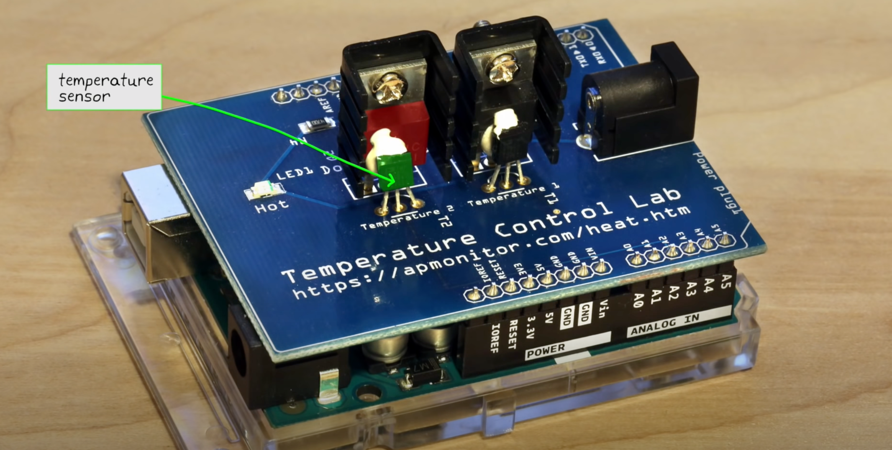
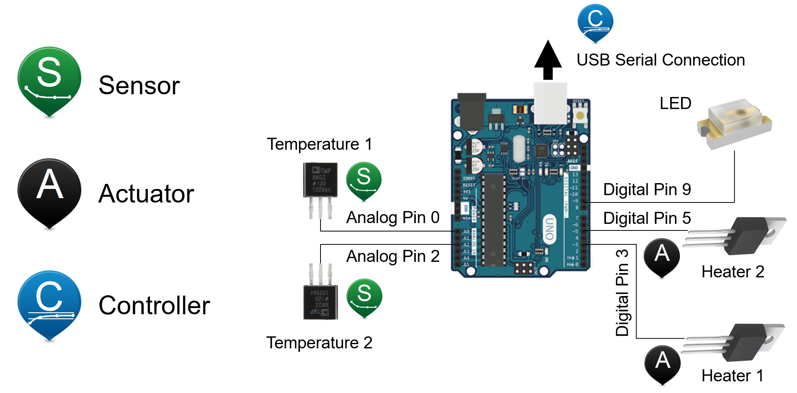

This Jupyter notebook aims to provide a detailed exploration of the Temperature Control Lab (TCLab) as a practical tool for understanding control engineering concepts.
The Temperature Control Laboratory provides a hands-on learning environment for traditional courses in process control. The Arduino-based device consists of a two-input, two-output system of heaters and sensors.
This part of the coure aims to bridge the gap between theory and practical application, a challenge many engineers face when transitioning from academic training to real-world problem-solving.
Applying theoretical knowledge to practical applications is not straightforward. This notebook will address these challenges, focusing on the iterative nature of engineering problem-solving and the importance of understanding there is often more than one right answer to a problem.
Spacecraft Thermal Control Systems
We are tasked with developing a thermal control system for an earth-orbiting satellite. This system must maintain the internal components, particularly the batteries, within a specific temperature range despite the harsh and variable conditions of space.
Controlling the level of temperature of equipment, payloads, satellites, and launchers is a critical aspect in all phases of a space mission. This chapter describes some of the intricacies of thermal control in space, emphasizing its importance for the protection of flight hardware and the success of the mission.
The Concept of Thermal Control
Thermal control in space refers to the technology and methods used to maintain a spacecraft’s temperatures within specific parameters throughout its lifetime. This encompasses a broad range of temperatures, from cryogenic levels (down to -270°C) to high-temperature thermal protection systems (more than 2000°C).
Importance of Temperature Management
Equipment Safety: Overheating can damage or severely affect the performance of onboard equipment. In space, rectifying such issues is nearly impossible, highlighting the need for efficient and reliable thermal control systems.
Performance Optimization: For sensitive components like electronics or optical instruments, maintaining specified temperature stability is crucial for optimal functioning.
Visual Aspects of Thermal Control
The thermal control subsystem is one of the most visually distinctive elements of a spacecraft. It often includes: - Insulation Blankets: These are foil-like materials, known as Multi-Layered Insulation (MLI) blankets, used to block a significant portion of solar heat flux. - Radiators: These are white-painted or mirror-like surfaces used to reject heat from the satellite to space, which is extremely cold (around -270°C).
Why is Thermal Control Important?
Thermal control is crucial for both the structural integrity and efficient operation of a satellite.
Factors Affecting Satellite’s Temperature
External Heat Sources: These include solar, albedo (reflected sunlight), and planet heat fluxes.
Internal Heat Production: Heat generated by electronic equipment and other onboard systems.
Heat Rejection: The process of dissipating heat into the cold expanse of space.
Impacts of Temperature Variations
Optimal Performance Range: Electronic equipment usually operates efficiently within a specific temperature range.
Instrument Sensitivity: Some payloads, like infrared detectors, require extremely low temperatures.
Lifetime Reduction: High temperatures can significantly shorten the lifespan of various components.
Structural Integrity: Large temperature differences can cause thermal expansion or contraction, potentially distorting the satellite’s structure.
Balancing Heat in Spacecraft
The level of a spacecraft’s temperature is a balance between the heat it receives and the heat it rejects. Key elements in this balance include:
Multi-Layered Insulation Blankets (MLIs): These insulation devices help block a substantial portion of the sun’s heat flux.
Radiators: These components facilitate the rejection of heat to the cold vacuum of space.
Thermal Control System Objectives
The primary objectives of the thermal control subsystem are:
Maintaining Overall Temperature: Ensuring that the spacecraft’s temperature remains within acceptable limits.
Temperature Distribution Management: Achieving an optimal temperature distribution within the satellite to cater to different mission phases (launch, transfer orbit, operation in orbit).
“Spacecraft Thermal Control Handbook” by David G. Gilmore: An in-depth exploration of various thermal control technologies and their applications in space missions.
The key challenge is to maintain the battery temperature within operational limits (approximately 0 to 20 degrees Celsius) despite the average internal temperature being around -5 degrees Celsius. This implies a need for a heating mechanism rather than cooling.
The proper functioning of satellite batteries is critical to the mission’s success. Temperatures outside the operational range can lead to failure, risking the entire mission.
Exploring Solutions
Several solutions are considered, including passive thermal control and the use of thermal straps. However, the decision has been made to use a dedicated strip heater, offering more control and robustness, especially given the power availability.
The Temperature Control Lab
The primary resource for TCLab can be found at apmonitor.com.
In subsequent sections, we’ll explore the complexities of dynamic modeling, understanding system responses, and the implementation of various control strategies.
Our approach will involve utilizing Python programming to engage with the TCLab hardware, conduct data analysis, and effectively visualize the behaviors of the system.
1.1 What is TCLab?
Description: TCLab is a compact laboratory setup that includes an Arduino microcontroller, heaters, temperature sensors, and an LED. It is designed for learning and applying control engineering principles in a hands-on manner.
Components:
Arduino Microcontroller: Acts as the brain of the setup.
Heaters: Provide thermal energy to the system.
Temperature Sensors: Measure the system’s temperature.
LED: Visual indicator for certain actions or states.
Purpose: To understand and apply feedback control principles in a tangible setup.
Understanding the TCLab Kit
The Core Components of TCLab
The Temperature Control Lab (TCLab) is an integrated system composed of several key components, each contributing significantly to its functionality:
Arduino Microcontroller:
Purpose: Serves as the central processing unit for the TCLab.
Functionality: Processes input data from temperature sensors and manages the operation of heaters.
Connectivity: Utilizes a USB connection for data transfer and allows for real-time control through Python scripts.
Heaters:
Description: TCLab features two heaters, each capable of generating adjustable thermal energy.
Role: Act as the main heat sources for experiments, replicating scenarios requiring temperature regulation. They function as the system’s actuators.
Temperature Sensors:
Type: These sensors are thermistors, a kind of resistor whose resistance varies with temperature changes.
Measurement Range: Capable of measuring temperatures ranging from \(-40^\circ\)C to \(150^\circ\)C.
Functionality: Positioned near each heater to accurately measure temperature, providing essential feedback for temperature control.
Heat Sinks:
Type: Comprised of transistor heat sinks.
Purpose: Employed to efficiently dissipate heat away from the transistors.
LED (Light Emitting Diode):
Purpose: Serves as a visual indicator for various states or actions, such as signaling the activation of a heater.
Operational Configurations of TCLab
TCLab can be configured in various modes depending on the educational objectives:
Single Input Single Output (SISO):
Utilizes only one heater and one sensor. Ideal for simple control experiments and learning the basics of temperature control.
Single Input Single Output (SISO) with Disturbance:
Employs one heater/sensor as the primary control system and the second heater as a source of external disturbance. This setup is useful for understanding how external factors influence control systems.
Multiple Inputs Multiple Outputs (MIMO):
Involves using both heaters and sensors simultaneously. This more advanced configuration isn’t covered here but is valuable for complex control system studies.
Each component of the TCLab plays a specific role, making it a versatile tool for teaching and experimenting with various aspects of control engineering. Whether for fundamental learning or advanced exploration, TCLab offers a practical platform for understanding the dynamics and control of temperature-based systems.

How TCLab Works
Operation Flow:
Input Signal: A Python script sends a command to the Arduino, setting the desired power level for the heaters.
Heating Action: The heaters generate heat corresponding to the received power level commands.
Temperature Measurement: The thermistors measure the resulting temperatures near the heaters.
Feedback Loop: These temperature readings are sent back to the computer.
Adjustments: The control algorithm in the Python script adjusts the heater power based on the temperature feedback, striving to reach and maintain a target temperature.
Section 2: In-Depth Look at TCLab Components
2.1 Arduino Microcontroller
Detailed Description: Provide specifics about the Arduino model used in TCLab, its capabilities, and its limitations
Ojectives:
Dynamic modeling with balance equations
The difference between manual and automatic control
Step tests to generate dynamic data
Fitting dynamic data to a First Order Plus Dead Time (FOPDT) model
Obtaining parameters for PID control from standard tuning rules
Tuning the PID controller to improve performance
Setting Up TCLab
This guide provides step-by-step instructions for setting up the Temperature Control Lab (TCLab), starting from installing Python on different operating systems to conducting initial tests with TCLab and its simulator.
Create the environment from the tclab_environment.yml file:
conda env create -f tclab_environment.yml
Activate the new environment:
conda activate tclab
To verify that the environment was installed correctly, you can use:
conda env list
Installing the TCLab Package
Activating the Environment:
Ensure your Anaconda environment is active. Open your Terminal (or Anaconda Prompt on Windows) and activate your environment:
conda activate tclab_env
Installing TCLab:
The tclab library is pivotal for interfacing with the Temperature Control Lab hardware. Install it by entering the following command:
pip install tclab
Press Enter to execute the command and complete the installation.
Installing Additional Useful Libraries
For a comprehensive experience with TCLab and to support various aspects of control engineering and data analysis, the following libraries will also be installed:
numpy:
Significance: A fundamental library for numerical computations in Python.
Installation Command:
pip install numpy
matplotlib:
Significance: Crucial for creating visual representations of data, especially for the analysis of TCLab experiments.
Installation Command:
pip install matplotlib
scipy:
Significance: Provides a broad range of tools for scientific computing, including methods for solving ordinary differential equations, useful in system modeling.
Installation Command:
pip install scipy
pandas:
Significance: Offers extensive features for data manipulation and analysis, ideal for handling complex datasets.
Installation Command:
pip install pandas
gekko:
Significance: Advanced package for optimization and control, suitable for implementing model predictive control strategies.
Installation Command:
pip install gekko
TCLab Schematics

Initial Tests with TCLab
Step 1: Connect TCLab
Connect TCLab: Plug in the TCLab device to your computer using a USB cable.
Step 2: Test TCLab Connection
Write Test Script:
Open your Python IDE or Jupyter Notebook.
Write the following Python code and run the script. If it prints the temperature, TCLab is connected properly.
import tclabwith tclab.TCLab() as lab:print(f"Connected! Heater 1 is at {lab.T1}°C")
TCLab version 1.0.0
--- Serial Ports ---
/dev/cu.BLTH n/a n/a
/dev/cu.BlueBeatsStudio n/a n/a
/dev/cu.Bluetooth-Incoming-Port n/a n/a
RuntimeError: No Arduino device found.
Using TCLab Simulator
Why Use a Simulator: The TCLab simulator is useful when you don’t have the physical hardware available.
Install Simulator: In Terminal or Anaconda Prompt, type pip install tclab again (it includes the simulator).
Test Script with Simulator:
from tclab import setup, clockTCLab = setup(connected=False, speedup=5)with TCLab() as lab:for t in clock(200, 2):print(f"Time {t} seconds. T1: {lab.T1}°C")
TCLab version 1.0.0
Simulated TCLab
Time 0 seconds. T1: 20.949499999999997°C
Time 2.01 seconds. T1: 20.949499999999997°C
Time 4.04 seconds. T1: 20.949499999999997°C
Time 6.03 seconds. T1: 20.949499999999997°C
Time 8.06 seconds. T1: 20.949499999999997°C
Time 10.07 seconds. T1: 20.949499999999997°C
Time 12.02 seconds. T1: 20.949499999999997°C
Time 14.03 seconds. T1: 20.949499999999997°C
Time 16.15 seconds. T1: 20.949499999999997°C
Time 18.04 seconds. T1: 20.949499999999997°C
Time 20.2 seconds. T1: 20.949499999999997°C
Time 22.01 seconds. T1: 20.949499999999997°C
Time 24.19 seconds. T1: 20.949499999999997°C
Time 26.24 seconds. T1: 20.949499999999997°C
Time 28.16 seconds. T1: 20.949499999999997°C
Time 30.03 seconds. T1: 20.949499999999997°C
Time 32.12 seconds. T1: 20.949499999999997°C
Time 34.2 seconds. T1: 20.6272°C
Time 36.04 seconds. T1: 20.949499999999997°C
Time 38.02 seconds. T1: 20.6272°C
Time 40.21 seconds. T1: 20.949499999999997°C
Time 42.14 seconds. T1: 20.949499999999997°C
Time 44.01 seconds. T1: 20.6272°C
Time 46.3 seconds. T1: 20.949499999999997°C
Time 48.22 seconds. T1: 20.949499999999997°C
Time 50.07 seconds. T1: 20.949499999999997°C
Time 52.27 seconds. T1: 20.949499999999997°C
Time 54.09 seconds. T1: 20.949499999999997°C
Time 56.28 seconds. T1: 20.949499999999997°C
Time 58.19 seconds. T1: 20.949499999999997°C
Time 60.04 seconds. T1: 20.949499999999997°C
Time 62.2 seconds. T1: 20.949499999999997°C
Time 64.11 seconds. T1: 20.949499999999997°C
Time 66.08 seconds. T1: 20.949499999999997°C
Time 68.23 seconds. T1: 20.6272°C
Time 70.13 seconds. T1: 20.949499999999997°C
Time 72.07 seconds. T1: 20.949499999999997°C
Time 74.05 seconds. T1: 20.949499999999997°C
Time 76.1 seconds. T1: 20.6272°C
Time 78.1 seconds. T1: 20.6272°C
Time 80.22 seconds. T1: 20.949499999999997°C
Time 82.28 seconds. T1: 20.949499999999997°C
Time 84.22 seconds. T1: 20.949499999999997°C
Time 86.16 seconds. T1: 20.949499999999997°C
Time 88.23 seconds. T1: 20.949499999999997°C
Time 90.0 seconds. T1: 20.949499999999997°C
Time 92.27 seconds. T1: 20.949499999999997°C
Time 94.0 seconds. T1: 20.949499999999997°C
Time 96.16 seconds. T1: 20.949499999999997°C
Time 98.02 seconds. T1: 20.949499999999997°C
Time 100.1 seconds. T1: 20.949499999999997°C
Time 102.24 seconds. T1: 20.949499999999997°C
Time 104.0 seconds. T1: 20.6272°C
Time 106.18 seconds. T1: 20.949499999999997°C
Time 108.27 seconds. T1: 20.949499999999997°C
Time 110.27 seconds. T1: 20.949499999999997°C
Time 112.1 seconds. T1: 20.949499999999997°C
Time 114.22 seconds. T1: 20.949499999999997°C
Time 116.24 seconds. T1: 20.949499999999997°C
Time 118.18 seconds. T1: 20.949499999999997°C
Time 120.19 seconds. T1: 20.949499999999997°C
Time 122.06 seconds. T1: 20.949499999999997°C
Time 124.22 seconds. T1: 20.6272°C
Time 126.19 seconds. T1: 20.949499999999997°C
Time 128.18 seconds. T1: 20.949499999999997°C
Time 130.25 seconds. T1: 20.949499999999997°C
Time 132.02 seconds. T1: 20.6272°C
Time 134.2 seconds. T1: 20.949499999999997°C
Time 136.27 seconds. T1: 20.949499999999997°C
Time 138.01 seconds. T1: 20.6272°C
Time 140.2 seconds. T1: 20.949499999999997°C
Time 142.18 seconds. T1: 20.949499999999997°C
Time 144.2 seconds. T1: 20.949499999999997°C
Time 146.23 seconds. T1: 20.949499999999997°C
Time 148.24 seconds. T1: 20.949499999999997°C
Time 150.19 seconds. T1: 20.949499999999997°C
Time 152.28 seconds. T1: 20.949499999999997°C
Time 154.25 seconds. T1: 20.949499999999997°C
Time 156.23 seconds. T1: 20.6272°C
Time 158.04 seconds. T1: 20.949499999999997°C
Time 160.11 seconds. T1: 20.949499999999997°C
Time 162.04 seconds. T1: 20.949499999999997°C
Time 164.05 seconds. T1: 20.949499999999997°C
Time 166.01 seconds. T1: 20.949499999999997°C
Time 168.23 seconds. T1: 20.6272°C
Time 170.08 seconds. T1: 20.949499999999997°C
Time 172.01 seconds. T1: 20.949499999999997°C
Time 174.14 seconds. T1: 20.949499999999997°C
Time 176.01 seconds. T1: 20.949499999999997°C
Time 178.22 seconds. T1: 20.949499999999997°C
Time 180.2 seconds. T1: 20.949499999999997°C
Time 182.2 seconds. T1: 20.949499999999997°C
Time 184.21 seconds. T1: 20.949499999999997°C
Time 186.08 seconds. T1: 20.949499999999997°C
Time 188.29 seconds. T1: 20.949499999999997°C
Time 190.24 seconds. T1: 20.949499999999997°C
Time 192.18 seconds. T1: 20.949499999999997°C
Time 194.09 seconds. T1: 20.949499999999997°C
Time 196.22 seconds. T1: 20.949499999999997°C
Time 198.26 seconds. T1: 20.949499999999997°C
Time 200.02 seconds. T1: 20.6272°C
TCLab Model disconnected successfully.